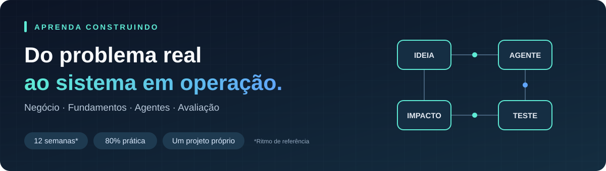
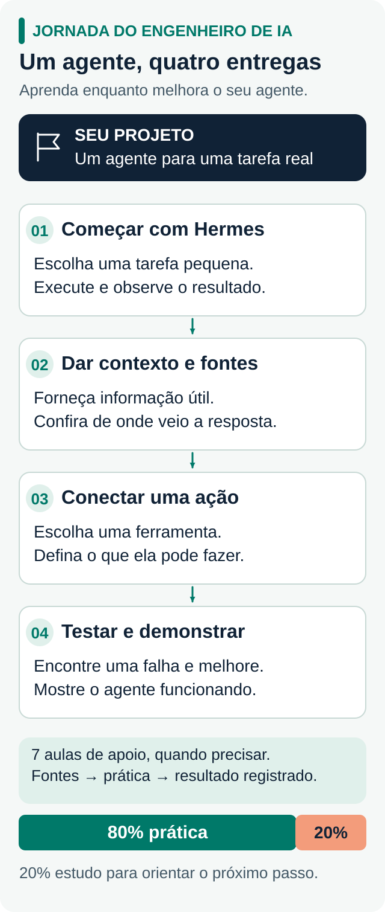

Jornada do Engenheiro de IA
Aprenda como a IA funciona e construa um agente que resolve um problema real.
Esta é uma trilha prática para começar a desenvolver as habilidades de um Engenheiro de IA usando um agente desde o início. Você encontra 4 entregas para construir, 7 aulas de apoio, diagramas, exercícios e indicações de onde estudar. Comece com o Hermes ou com uma base que já tenha e aprenda conforme o projeto pede.
O que você vai construir: um agente capaz de receber uma solicitação, consultar informações, usar ferramentas e registrar o resultado. Você também vai aprender a investigar erros, medir custo e tempo de resposta e demonstrar suas decisões.
4 entregas · 7 aulas de apoio · 80% prática / 20% teoria · No seu ritmo
Começar a jornada → · Ver as aulas · Abrir o guia online ↗
O que tem aqui dentro
🧭 Comece aqui
Escolha como iniciar, entenda o projeto e encontre sua próxima entrega.
📚 Aprenda nas aulas
História da IA, modelos, dados, agentes e operação: explicação, desenho, fonte e exercício juntos.
🛠️ Coloque em prática
Dê forma à ideia, teste uma mudança e acompanhe seu progresso com exemplos preenchidos.
🎨 Entenda pelos desenhos
Veja o caminho completo, o funcionamento de um agente e os fluxos de dados, busca e avaliação.
Para quem é: quem quer sair das primeiras experiências com IA e aprender a construir soluções. Você pode começar com o Hermes do vídeo ou com uma base que já tenha. Você aprende a orientar o agente, usar fontes, conectar uma ferramenta e conferir o resultado. Conceitos técnicos mais detalhados ficam em trechos opcionais dentro das aulas.
O que você vai aprender e construir

Ampliar o desenho ↗O mesmo projeto acompanha todo o caminho. Pode ser um agente de pesquisa, atendimento, organização de tarefas ou outro processo do seu dia a dia. Nas aulas, usamos o exemplo de uma pessoa interessada em um serviço que precisa de informação e acompanhamento.
- Coloque para funcionar: inicie seu agente e escolha uma tarefa pequena.
- Dê contexto: acrescente informações e fontes para respostas melhores.
- Conecte uma ação: permita consultar ou alterar algo em um ambiente de teste.
- Teste e mostre: corrija uma falha, repita os testes e demonstre o resultado.
→ Conhecer o projeto e suas entregas · Explorar o mapa interativo feito com Archify
Comece por aqui
Abra a mente para o que você pode construir com IA. Seu repertório atual é um ponto de partida. Conheça projetos, imagine aplicações no seu dia a dia e dê uma chance às ideias que ainda não sabe executar. A confiança cresce quando você transforma uma possibilidade em um experimento.
Minha recomendação — Lucas
Se puder investir em um curso agora, recomendo o curso e a comunidade do Bruno Okamoto, no Pixel AI Hub. Considero um ótimo início e o Bruno um ótimo mentor. Comece por lá e continue aqui, aplicando o aprendizado nas entregas da trilha.
Não tenho nenhuma parceria com o Bruno Okamoto. Essa é uma recomendação pessoal, porque considero o trabalho dele um ótimo ponto de partida.
Se estiver sem orçamento para um curso, assista ao meu vídeo Crie seu Agente de IA Hermes em menos de 20 minutos. Coloque seu agente para funcionar e siga construindo a partir dele com as aulas daqui.
Depois, dê seu primeiro passo na trilha: escolha uma tarefa que o agente deve ajudar a resolver, preencha a ideia do seu projeto e siga a primeira entrega. Veja como continuar com a base que já tem.
LLM, agente e Hermes: o que muda?
- LLM é o modelo de linguagem: interpreta o contexto e gera respostas ou pedidos de uso de ferramentas.
- Agente de IA combina o modelo com instruções, contexto, ferramentas e um ciclo de execução. O modelo pode escolher os próximos passos; o sistema executa as ações permitidas.
- Hermes Agent é um projeto da Nous Research que oferece essa estrutura, com ferramentas, memória e habilidades reutilizáveis. Você configura um modelo e usa a base para construir seu agente.
Por exemplo: o modelo pode sugerir como organizar uma pesquisa; um agente com as ferramentas adequadas pode consultar fontes e salvar um relatório. Veja a explicação ilustrada e a documentação oficial do Hermes.
Sete aulas para consultar enquanto constrói
Abra a aula ligada à dúvida da sua entrega. Cada uma tem explicação curta, desenho, exercício e fontes. História e fundamentos fazem parte do material; os trechos “Para aprofundar” permitem conhecer os detalhes quando quiser.
01 · Descubra um problema que vale resolver
Conheça a história da IA, escolha uma tarefa útil e crie um primeiro teste da ideia.
02 · Entenda como a IA aprende e responde
Entenda modelo, instrução e contexto; compare duas orientações para a mesma tarefa.
03 · Conecte seu agente ao mundo
Receba informações, conecte serviços e guarde os dados de cada execução.
04 · Ensine seu agente a consultar fontes
Entenda como buscar documentos e usar essa informação para responder — o caminho conhecido como RAG.
05 · Transforme respostas em ações
Conecte ferramentas, acompanhe as decisões do agente e defina até onde ele pode agir.
06 · Descubra o que funciona e o que falha
Crie casos de teste, investigue erros e compare as versões do seu agente.
07 · Coloque em uso e mostre o resultado
Acompanhe tempo, custo e qualidade, rode um piloto e explique suas decisões.
→ Escolher a aula que ajuda na sua entrega
Aprenda praticando, no seu ritmo
Avance pelas entregas, sem prazo fixo. Reserve cerca de 80% do tempo para construir e testar e 20% para estudar o que ajuda na próxima mudança. Você pode começar pela tarefa simples do vídeo e aumentar o desafio aos poucos.
Estude uma ideia → faça uma mudança → teste → registre o que aprendeu. Repita no mesmo agente. Em uma sessão de uma hora, uma sugestão é usar 12 minutos para estudar e 48 para aplicar.
Organizar minha rotina · Ver as quatro entregas · Registrar meu primeiro experimento
Onde estudar e com quem trocar
As aulas apontam para conteúdos da OpenAI, Anthropic, Google, GitHub, Microsoft e outras referências. Há livros, vídeos, artigos e exemplos para consultar conforme sua dúvida.
- Para escolher uma leitura: fontes recomendadas por etapa.
- Para pesquisar uma dúvida: buscas no Google e nas documentações.
- Para acompanhar e conversar: @ailucasdz no X, os perfis que acompanha e os Discords de Nous Research e OpenClaw. O guia de comunidades ajuda a participar.
O que fica pronto ao final
Um agente que você consegue demonstrar, testar e explicar, com uma tarefa definida, fontes conectadas, uma ação útil e testes registrados. Um pequeno piloto com outras pessoas pode ser seu próximo passo. Junto dele, você terá o desenho do funcionamento, os testes, os registros de melhorias e as decisões sobre custo e qualidade.
Esse conjunto mostra as habilidades que você desenvolveu para atuar com Engenharia de IA e permite continuar evoluindo o projeto.